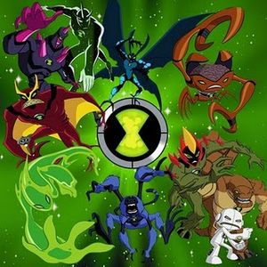

Ben 10
 De: La Frikipedia, la enciclopedia extremadamente seria.
De: La Frikipedia, la enciclopedia extremadamente seria.
De la serie grandes personajes:
Un puto niño subnormal de mierda con un reloj de los chinos.
| Nacimiento
|
Cuando George Bush dijo: "Nos vamos a fumar cigarros de los moros"
|
| Muerte
|
Cuando se convierta en un alien más débil que Magikarp y sea violado analmente aniquilado en batalla.
|
| Ocupación
|
Hacerse pajas con el bicho de 4 brazos... ¡con los 4 brazos a la vez!
|
| Nacionalidad
|
De todo el universo... y fuera de este.
|
| Malo o bueno
|
Los dos.
|
| Atentados contra la humanidad
|
Poner en peligro al universo para salvarlo con Alien X haciendo casi nada más de una vez.
|
| Religión
|
Cualquiera que encuentre en el universo.
|
| Notas
|
Malas, los bichos lo quieren matar por su supergilipollez.
|
«Voy a llamar a los fontaneros.»
~ Ben 10 llamando a los fontaneros.
«¿Qué WC hay que arreglar?»
~ Fontanero sobre la llamada de Ben 10
«Ninguno, solo echa el alien.»
~ Ben 10 al fontanero
«Para eso llama a los Hombres de Negro. »
~ fontanero hacia Ben 10
«Yo no cazo aliens»
~ Mario , porque cree que los fontaneros solo caza aliens
«No somos fontaneros.»
~ Hombres de Negro hacia Ben 10
Transmitido por la maligna cadena de defiende" el mundo.
Biografía
Este chaval se llama Benjamino Tennyson. Nació en una familia de subnormales, pero como él era retrasado, se lo regalaron a un maricón viejo fanático de Star Wars que conocieron en el planeta que no sé cómo se llama. Se crió haciendo cigarrillos con hojas de badea y fumándolos para pasar el rato, e incluso sufría repetidas violaciones de parte de su abuelo si no trabajaba. A la tierna edad de 8 años se mudo a Miami y fue vecino de Tony Montana, un día decidió colarse a la mansión de Tony Stark y llegó al laboratorio secreto donde estaban fabricando un reloj inter-dimensional de los chinos para transportar la droga, pero fue un fracaso y lo único que consiguieron fue que pudiera tener 10 alienígenas retrasados al azar. Ben se robó el reloj, pero como el reloj contenía droga extra fuerte hizo que alucinara que salvara el mundo y comenzó una aventura erótica exótica por todo el país con su "abuelo" y su prima de 99 años (lo que mas le gusta es follar y masturbarse con sus fenómenos del reloj).
Reloj de Ben
El reloj es de los chinos edición especial limitada, y además de los alienígenas retrasados tiene linterna y puerto USB, y además de eso las primeras 1500 llamadas recibirán los siguientes obsequios y accesorios para el reloj:
- 10.000 copias no vendidas de los DVDs de "Un Chihuahua de Beverly Hills".
- El libro "Ben 10 for Dummies".
- Un CD de Justin Gayber.
- Un video de Paris Hilton.
- 100 revistas porno diferentes.
- 5 paquetes de preservativos (Si llamas en los próximos 3 segundos seran 15).
Ádemas el reloj tiene una resistencia al agua de 20 cms, tiene carcasas intercambiables, conexión a internet, MP3 y el set completo de ropa para cada alien retrasado, pero NO DA LA PUTA HORA.
El reloj contiene 10 alienígenas anormales (que terminan superando al número de pokemones habidos y por haber), aunque aquí solo nombraré a 27, porque tengo que follar con mi minga y no quiero tardar mucho. Cada uno se adapata a la ropa de Ben sin causarle ningún daño ni rasguño (¿alguien sabe cómo?), aunque esto cambia en Ben 10: Fuerza Alienígena, en donde todos los alienígenas están desnudos, ya que a los creadores no les alcanzó la inteligencia para idear nuevas adaptaciones de ropa con sus diseños y con la nueva ropa que estaba usando Ben. Los subnormales son:
Alienígenas de Ben 10
- Cuatro
Vergas Brazos: Este es el favorito de Ben, lo utiliza para masturbarse jugar, ir al baño, bajar gatitos todo el día, lavar ventanas de edificios altos, etc. Él tiene superfuerza y puede levantar hasta a tu gorda madre un camión lleno de revistas porno , así que cuidado con este pijudo.
- Bestia Sexual: Es un experimento de Televisa, e iba a ser un miembro de Rebelde, pero decidieron que Anai era más fea y fuerte que él. Ash Ketchup lo atrapó en el reloj y lo vendió por Internet. Tiene fuerza y súper olfato y sensibilidad, pero el muy subnormal no tiene ojos. Entonces, ¿cómo hace para ver? Resulta que tiene una especie de radar eficiente que le sirve como si tuviera ojos hasta en el culo (que encuentra a todas las putas en un kilómetro de largo).
- Materia Fecal: Es mas chiquito y diminuto que
tu pene una aguja, pero cuenta con más inteligencia que todos los reggaetoneros juntos. Por alguna razón sus enemigos nunca lo pisan ni lo fumigan, siempre inventa un aparato de mierda para salir como pedo por su casa de la escena del crimen.
- XLR-8: Este cabeza de huevo, copia barata de alien,
se corre muy rápido y la prima de 99 años se traga todo el semen se monta encima de él. Es más rápido que tú haciéndote una paja, precoz Deoxys en forma velocidad, pero hay ciertos terrenos en los cuales no puede correr porque se resbala, y el pobre está jodido porque no sabe caminar. Por suerte, el Ben del futuro logró solucionar este problema con muchos hacks y ahora puede correr hasta en semen de caballo.
- Diamante: Es un trozo de piedra andante, lo único para lo que sirve es para satisfacer a la prima y al viejo metiédoles diamentes de esos de los chinos por donde sea que les quepa. También le sirve para ayudar a su familia a salir de la pobreza (¿qué más te esperabas, si ni casa tienen?) vendiendo por medio de estafa miles y miles de diamantes a gente interesada por mucho dinero, los cuales desaparecen cuando Ben vuelve a la normalidad.
- Inferno: Este fue una transformación del nene cuando fue todo drogado, estaba dando vueltas por la ciudad, vio un edificio en llamas, el Windsor, y se metió... creia que era una disco. Entonces, como hace unos cuantos minutos había estado dándose un baño en "ácido", alias petróleo, una chispa le tocó y ardió como una puta con un pirómano. Entonces saltó desde un octavo piso y se dio contra el suelo. Esta aberración de la naturaleza que suele ser el terror de los peluqueros le sirve a Ben para calentársela siempre que quiera y para cocinar comida (ya que, como es hombre, carece de habilidad para la cocina a diferencia de su prima Gwen) y dejarla en un estado agradable.
-
Nemo Acuático: Es un pescado subnormal... y ya está, solo que al estilo piraña podrida. Le sirve a Ben para saber lo que se siente ahogarse por estar fuera del agua.
-
Chicle Boomer Ultra T: Es un pedazo de lefa andante que solo sirve para poseer cosas tecnológicas y escuridizarse por el culo de tu madre. Solo es un chicle mal pegado a un zapato, ¡y esto sucedio cuando se masturbó por 1º vez! Ben lo suele usar para pasarse todas sus partidas de Pokémon más rápido de lo que eres cuando tu novia está sola. También lo usa para entrar a la Internet Profunda y descargar material de niñas de su edad.
-
Casper, el fantasmita amigable Fantásmatico: Este fue un helado que se escapó de su bolsa, qué cabrón, se lo queróa comer una gorda pero no pudo, y se escapó y se fue a este circo ambulante de gilipollas. Entonces el nene tocapollas le capturó y le hizo su amigo invisible. Se cree que este alienígena es un Illuminati encubierto.
- Insectoide: Es una mosca asquerosa gigante que se posa en la comida de otros y viola putas como nadie. Solo come fabrica mierda verde que arroja desde la boca y los ojos.
-
Dragon Ball Cannonbolt: Es una transformación de la pelota de fútbol de su cole. Fue el primer alienígena en el que Ben se transformó luego de haber estado jugando con los 10 subnormales. Se diferencia de los anteriores en que prácticamente lo único que hace es ir destruyendo todo a su paso convertido en una bola de la muerte más pesada que el martillo de Thor. Al igual que Sonic, se pone en posición fetal para trasladarse gran parte del tiempo y sin marearse en algún momento. Se cree que utiliza magia negra ilegal para sostener objetos mientras está en forma de mi bola.
- Up-Shock: Es una iguana deforme que traga como pelón de hospicio y que despues lo regurgita todo en forma de pelotas brillantes y explosivas que te lanza encima. Un dato interesante de este es que es capaz de ingerir TODO. ¿En serio todo? Es broma, hay algo que no puede ingerir: comida (subnormal). Expertos señalan que es ilógico que su especie siga con vida ya que, no solo no comen comida normal, sino que escupen toda la basura que ingieren.
-
Planta de Marihuana Way-Main (O como mierda se escriba): Es una planta miserable que puede estirar sus miembros más que un pene en erección y que se alimenta de insectos. Anteriormente era la raiz de uno de los Ents del Señor de los Anillos, pero cuando talaron a este último, sus raíces cobraron vida. Puede lanzar toda la lefa encima de sus enemigos semillas explosivas. Es un banquete para muchos vegetarianos.
-
Pene Gigante: Es un pene alienígena de MÁS DE 8000 metros de altura con piernas y brazos (como un humano cualquiera) que salió directamente desde el interior del culo de Vilgax apareció en la pelicula "El Ano Secreto del Omnitrix". Es prácticamente tan útil como un humano cualquiera de su tamaño, nada en especial con este (salvo su tamaño descomunal).
- Chico Ojo: No es más que un viejo verde que camina que tiene 563.849.394.834.534 ojos por cualquier parte de su cuerpo MENOS EN LA CARA de los cuáles mágicamente salen
semen rayos láser, rayos eléctricos, rayos de hielo, hiperrayos, rayos de veneno, rayos solares, de fuego, de roca, de acero y de cualquier otro tipo sacado de Pokémon.
-
Polla Dito: Es un enano (aunque sigue siendo más alto que Ben) que se multiplica en muchos más en menos de lo que canta un gallo como si un Ben Tennyson no fuera suficiente; cuando se transforma en este viejo hay que aguantarlo de a decenas. No confundir con Ditto de Pokémon. Si uno solo de su especie puede multiplicarse un número ridículo de veces, imagínense cómo vivirá su especie en su planeta... y no quiero ni imaginarme cómo procrearán.

El Ben 10 de Alien Force, súper
penetrado mejorado.
Alienígenas de Ben 10: Pedo Fuerza Alienígena
Ahora Ben Tennyson es un adolescente y es conocido en todo el jodido mundo del porno universo. Se había quitado el Omnitrix hacía ya mucho tiempo porque quería tener una vida normal (aunque él de por si es bastante "anormal" sin necesidad del dichoso aparato) pero una nueva amenaza alienigena aparece y decide volver a ponérselo, pero es tan subnormal que en lugar de reactivarlo lo reinicia por accidente, los antiguos aliens desaparecen y llegan otros 10 nuevos (arrancan con diez para que la estúpida serie no tenga un nombre injustificado... sí, es estúpida porque se sopone que sean 10 alienígenas pero siempre aparecen más):
- Swamp Fire o Fuego
Apestoso Pantanoso: Para formar a este extraterrestre, los antiguos Wai-Main e Inferno realizan la fusion que les enseño Goku. Es una planta de 2 metros de alto que que se tira pedos desde las manos y genera una chispa para que los gases se incendien y así lanzar fuego. Tiene la habilidad de reconstruir cualquier parte de su cuerpo (sobre todo la más importante) y puede también controlar a las plantas y hacerse pajas con su prima de 69 de edad y un travesti convertirse él mismo en marihuana de la buena.
- Humongousario: El Omnitrix utiliza el ADN de los dinosaurios de Jurassic Park misteriosamente fusionado con humanos para así poder crear una nueva raza de dinosaurio, más inteligente y menos sanguinario, con la capacidad de aumentar el tamaño de su
pene cuerpo unas cuantas veces. Es el Cuatro Brazos de esta generación, por lo cual se sabe que Ben siempre intenta transformarse en él cuando quiere cargarse a sus enemigos de una puta vez (como cuando tenía 10 años). Si fuera un Pokémon tendría más de 400 de ataque, pero 0 de ataque especial.
-
Heladera Frío: Es un insecto espacial (el hermano perdido de Insectoide) que puede volverse invisible e intangible para así poder atravezar el culo de tu hermana materiales sólidos (al igual que Fantasmático). Superman le enseñó su tecnica del aliento de hielo, y es tan, pero tan degenerado que se reproduce con él mismo (se cree que esto se debe a que es muy feo y no consigue a ninguna chica). Gracias a este alienígena fue que Ben pudo experimentar la procreación por primera y única vez en su vida.
- Piedra: Al igual que Frío es un pariente de uno de los alienígenas anteriores (este es primo de diamante). Es una roca andante que tira semen brillante desde cristales que salen de su espalda.
- Alien
Z X: Es el hermano de Dios, solo que tiene un grave desorden de personalidad bipolar. Es omnipotente pero es un poquititititito lento para moverse (para que tengan una idea de su velocidad de actuacion, es necesario que sepan que aún hoy en día está pensando en si debe salvar a los dinosaurios o no). Puede que sea aparentemente el alien más útil de todos, pero hasta ahora Ben no lo ha usado más que unas 3 miserables veces (el crío todavía no lo aprende a controlar).
- Shit-Ray: Es una mantarraya a la que no le gustaba la vida en el mar y decidió aprender a volar para probar suerte en el cielo. Puede lanzar rayos de plasma desde los cuernos y por el culo. Es la versión voladora de Sonic.
- Eco Eco
Eco Eco Eco Eco Eco: Es uno de los clones de Dito, pero este tuvo un accidente automovilístico y quedo tan mal herido que tuvieron que reconstruirlo como un Robocop. A pesar de eso, no perdió la habilidad de multiplicarse, y ademas ahora puede tirarse eructos agudos superpotentes que te pueden dañar los oídos más que una canción de Justin Bieber.
-
Cangrejón o Pajerón Cerebrón: Es un plato de marizcos superdesarrollado con super-mega-archi-recontra-inteligencia. Es una supuesta versión de Materia Fecal con un tamaño decente, la habilidad de dejar su cerebro al aire (como si no lo pudieran matar así) para lanzar rayos eléctricos a lo Pikachu y con todo el cuerpo diferente.
- Goop: Es un moco líquido con un Platillo Volador encima de su cabeza, es todo lo que necesitan saber.
- Nano-Mec: Una mota de semen muy pequeña que puede volverse aún mas pequeña, con morros de autómata que puede volar e introducirse en el ano de las personas. Es exclusivamente exclusivo de la pelicula "Ben 10: Invasion Semenífera" y tras el final de la misma, nunca más vuelve a aparecer porque a Ben no le agrada mucho ser el producto de sus propios genitales.
 Acá podemos apreciar a los 10 iniciados, cada uno más feo que el anterior.
- Rath: Hijo de un tigre terrestre y de una rata alienígena común. Este viejo es más raro que ver a un cerdo bañándose en otra cosa que no sea barro. Toma demasiados esteroides y testosterona, por eso siempre está enojado y tiene la misma inteligencia que una bacteria
como tú. También es más feo que pisar mierda estando descalzo y tiene garras y 5 veces más fuerza que Cuatro Vergas. Se cree que es pariente del tigre de Zuckaritas o que es él mismo con esteroides alienígenas.
- Lode
chupaestar: Un alien que se paseaja metiéndose un imán en el culo hasta que se le metió hasta la cabeza y ahora "atrae" iphones y celulares que roba del chino de los moros, créanlo o no.
Películas
Ben 10: El Ano del Omnitrix
En esta pelicula animada, Ben es tan pajero e inútil que activa el mecanismo de autodestrucción del Omnitrix, que en menos de tres días terrestres se bajaáa los pantalones y les enseñara el culo a todos, destapando un agujero negro que se chupara al universo entero. Ben, con ayuda de Tetris Tetrax, y la entrometida de su prima deben encontrar al creador del Omnitrix, Azmocmuth para que detenga esta cuenta regresiva y salve el universo, ya que el viejo es tan paranoico que decidió no decirle a nadie como desactivarla por si acaso (claro, por eso mismo la idea de que todo electrodomestico debe tener un mecanismo que debe acabar con todo el puto universo para que no caiga en las manos pegajosas y equivocadas, como las de Vilgax). Al final, el pajero de Vilgax (que quería obtener al Omnitrix a toda costa sin importar que el universo fuera a destruirse) es derrotado por Ben, ya que después de haber arreglado el Omnitrix con Azmmmmmmouth, este último lo convierte en un pene de MÁS DE 8000 metros de altura que se lo carga con más facilidad que un Tyranitar a un Magikarp (obvio, después de 10 minutos vuelve a ser el mismo niño feo y enano de siempre).
Ben 10: Carrera contra el Pedo
En la película live action Ben 10: Race Against Fart (traducido como Ben 10: Carrera Contra el Pedo) Ben es interpretado por el actor Graham Phillips. Este filme tratará de que un viejo verde (color violeta oscuro, claro) alíenigena quiere eliminar a la Tierra trayendo una flota de penes naves espaciales llenas de garbanzo, porotos y frijoles saltarines que llamara por medio de un artefacto de poronga llamado "Las Manos del Pedotron" y que, si logra su objetivo, hará que todos los humanos se tiren tantos pedos que intoxicarán el planeta eliminando el 99.99999999999999999999% de la vida en el planeta (Por supuesto, nunca eliminaria el 100% de la vida, no es taaaaaaan malo despues de todo), pero Ben, ayudado por su puta prima lesbiana Gwen, su abuelito Max y una bola de viejos arruinados que resultan ser plomeros derrotan a ese alienigena de mierda, lo hacen cagar salvando al mundo y culminado con un acto de magia barato realizado por El Duo Dinamico Ben y Gwen (Qqe en realidad es falso porque lo único que hacen es que Ben se convierta en bestia sin ser visto esto por el público, luego Gwen le pone un telón encima y Bestia se convierte en Ben, haciendo que todo el mundo les aplauda, qué tramposos que son).
Ben 10: Invasion Semenífera
Esta pelicula esta inspirada en Ben 10: Fuerza alienigena, y nuestro querido heroe es interpretado esta vez por Ryan Kelley, y se trata de que, años atras, los alienigenas decidieron eliminar la Tierra (como siempre) disparando todo su semen hacia ella, pero por suerte los humanos lograron repeler este ataque masivo y almacenaron todo el semen en una boveda de los Plomeros, pero muchos años despues (cuando el niño esquizofrénico multifacético ya se era grandecito) una ola radiactiva le dio vida a todo el semen alienígena, separándolo en gotas vivas individuales que formaron un enjambre gigantezco que podían meterse por el culo de las personas y controlarlas y que, como las abejitas de mierda que te pican porque se enojaron por cualquier estupidez, como por algún anillito brillante o por tu ropa de color oscuro marca emo, tenían una "reina del semen" que se alojó en el interior del culo de un humano para producir más semen mutante, y le corresponde a Ben, a Gwen, a Mister Músculo Oxi-Power Kevin y a una perra nueva amiga de Ben (é hija del que tenía a la reina del semen adentro) detener la invación semenífera. Al final, Ben habilita una nueva fase del Omnitrix, convirtiéndose en una version diferente de las motas de semen llamada Nano-Semen y se mete por el culo del pobre hombre derrotando a la reina y salvando al mundo (¡¡¡Wiiiiiiiiiiiiiiiiiii!!!).

|
|
|
Autor(es):
- Krusher
- Fordus
- Roms
- El Sevillano
- Zulhen
- Duhbomb
- Naruto hyuga
- Mr. W
- Cambiaggio
- AlemanH
Frikipedia 2005-2016, Licencia
GFDL 1.2 - Extraído por FrikiLeaks